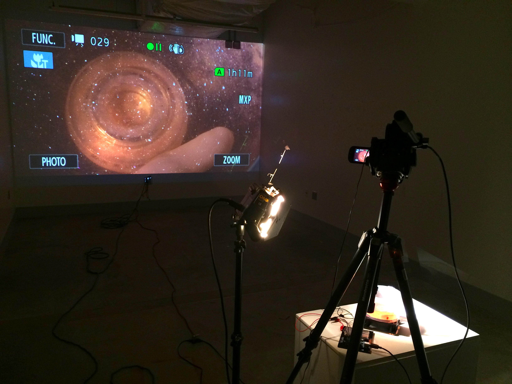
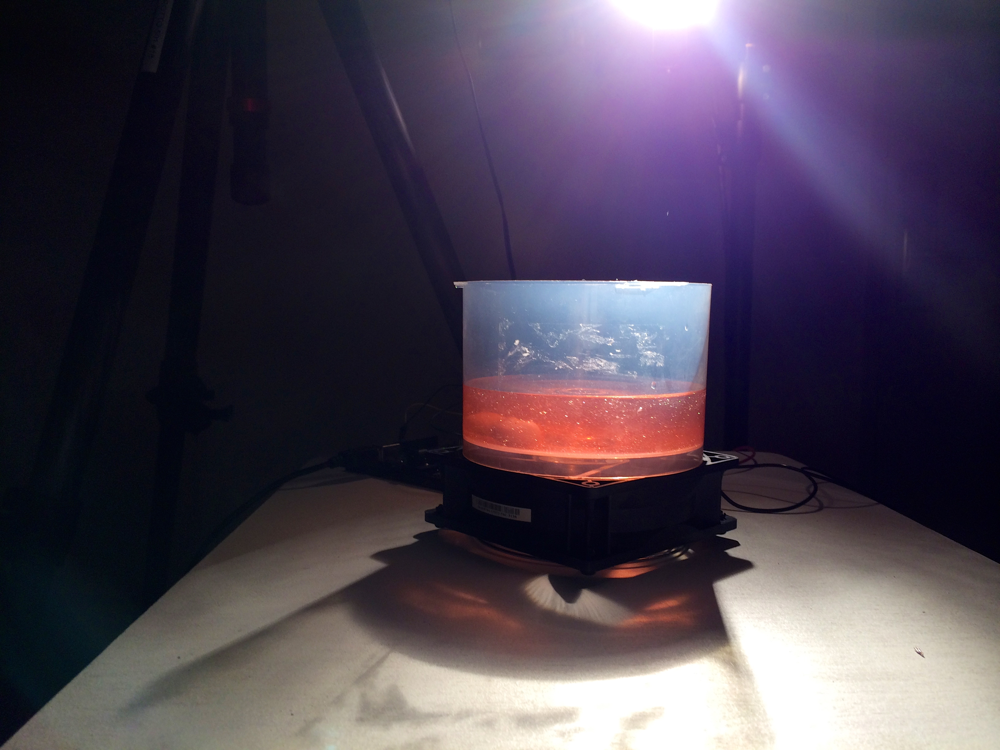
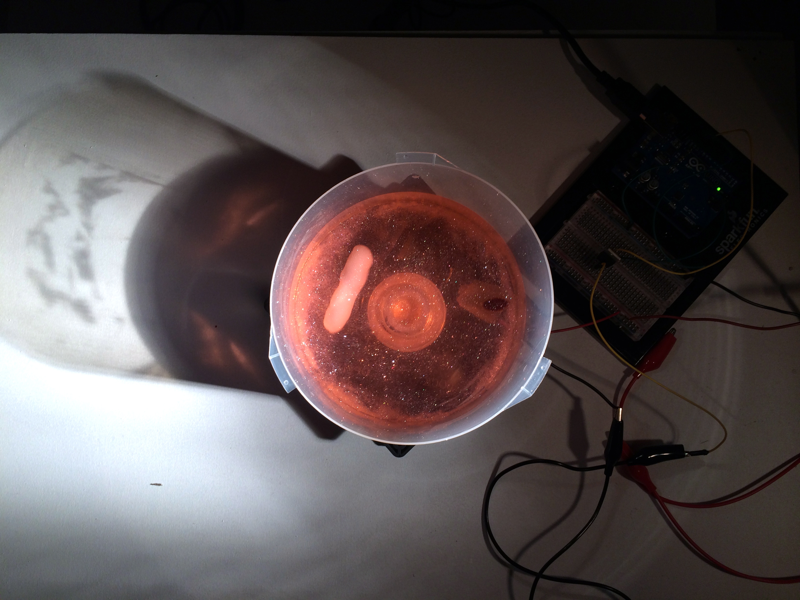
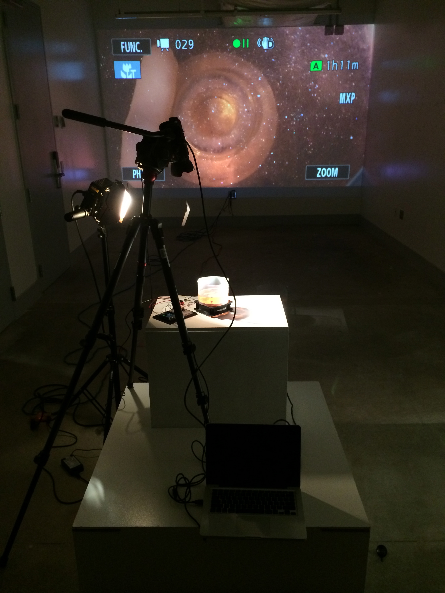
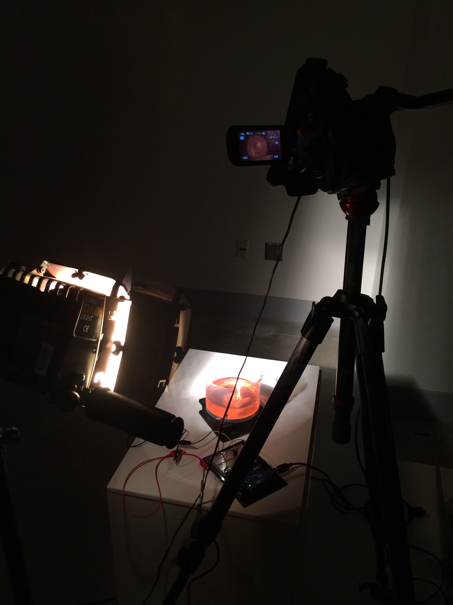

 This quarter I am in Jason Salavon's Data and Algorithm in Art class. This is a group project I did with Clare Koury and Rebeca Carillo.
We hooked up a PC fan to an Arduino and had it pulse briefly every couple seconds. The fan had a magnet attached to it.

On top of the fan we put a CD spindle with some rheoscopic fluid in it. To agitate the liquid we used Shapelock to encase another magnet. Basically we made a magnetic stirrer that only worked part of the time.

Here is a video of me discovering that the fan goes too fast for the magnetic coupling. We solved this by pulsing the fan for about 40ms.
Then we made a pedestal for it, added a camera that provided a live feed to a projector, and shined a bright light on it. All the pieces came together in about half an hour. It working at all was pretty surprising, I thought, so when people thought it had artistic merit as well I was doubly suprised.
Video:
Additgithub.ional images: 

Pictures courtesy of Clare Koury.